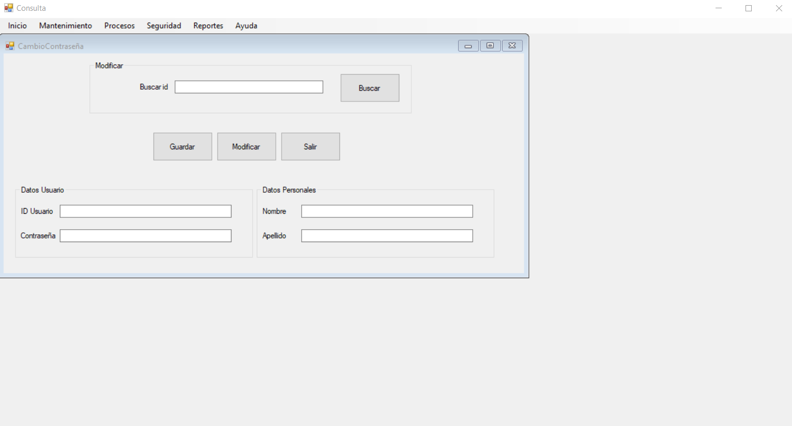

En el MDI encontramos las opciones principales con las que cuenta el sistema. Cada opción permitirá realizar una serie de actividades las cuales tienen como objetivo hacer que el sistema sea fácil de utilizar.
En la opción de Mantenimientos se encontrará todo los formularios para manipular la información de diferentes areas como Usuarios, Aplicaciones, Módulos y Perfiles.
En la opción de Procesos se encontrará todo los formularios para manipular la información de diferentes areas de asignación como Aplicaciones a Usuarios, Perfiles a Usuarios y Aplicaciones a Perfiles.

La opción de seguridad se encargará de realizar un reestablecimiento de contraseña para un usuario en especifico.
La opción de reportes tendrá el proposito de generar una bitácora de los usuarios y lo que ha llegado a operar, asi como mostrar un formulario si asi se desease.
La opción de ayuda tiene la finalidad de dar a conocer el funcionamiento correcto del sistema. Esto con el fin de proporcionar una herramienta que solucione las dudas del usuario relacionadas al sistema.